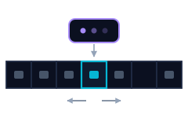
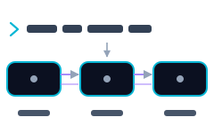
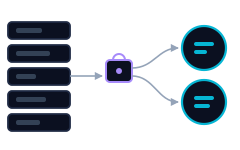
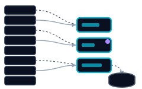
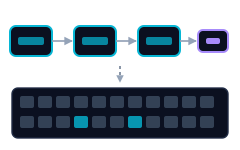

Systèmes d’exploitation en C
Cinq systèmes écrits à partir de zéro en C : un shell Unix, un ordonnanceur tournant sur deux cœurs simulés, un gestionnaire de mémoire virtuelle avec TLB et pagination à la demande, un lecteur FAT32 travaillant sur les octets bruts d’un disque, et un interpréteur de machine de Turing.
De quoi il s’agit
Une session complète de systèmes d’exploitation, où chaque travail construit ce que le cours venait d’expliquer. Non pas des simulations de l’idée dans un langage de haut niveau : le shell appelle fork, l’ordonnanceur exécute des threads sur une file partagée, et le gestionnaire de mémoire évince des pages vers un stockage de secours parce qu’il a moins de frames que de pages.
Le point commun est qu’ils plantent tous dès que la gestion de la mémoire est fautive, et c’est en grande partie ce qui les rend formateurs.
Comment c’était évalué
Des suites de tests cachés à chaque remise, exécutées automatiquement. L’ordonnanceur allait plus loin : il était noté sur sa performance mesurée face à des implémentations de référence, les erreurs mémoire étant soustraites du total. Cette combinaison est inhabituelle pour un travail scolaire, car réussir les tests ne suffisait pas.
Les cinq systèmes

Interpréteur de machine de Turing
Analyse une description de machine en enregistrements de transition, puis simule le ruban.
- Les fonctions utilitaires de la bibliothèque standard étaient interdites : longueur de chaîne, copie de mémoire et lecture de lignes ont donc été écrites à la main
- Premier travail du cours, et le point de départ de l’habitude d’associer chaque allocation à sa libération

Shell Unix
Analyseur lexical, analyseur syntaxique et exécuteur, écrits à partir de zéro.
- Pipelines de longueur quelconque, ainsi que
;,&&et||avec évaluation en court-circuit - Code de sortie propagé comme dans un vrai shell, y compris la convention pour un enfant tué par un signal
- Le plus ardu : le parent doit fermer l’extrémité d’écriture de chaque tube, sinon le lecteur ne voit jamais la fin de fichier et le pipeline se bloque

Ordonnanceur sur deux cœurs
Une file de processus prêts partagée par deux threads de travail, notée sur sa vitesse et non seulement sur sa justesse.
- Protégée par un mutex et une variable de condition, avec une attente qui boucle pour qu’un réveil intempestif ne puisse pas retirer d’une file vide
- L’arrêt circule dans la file sous forme de sentinelle, et non d’un drapeau que chaque thread interroge
- Les nœuds retirés sont libérés après le déverrouillage, ce qui garde la section critique courte
- Jugé face à First Come First Served, Shortest Job First et Round Robin, ainsi que des références que nous n’avons jamais vues
- Réglage : quantum de temps balayé sur huit valeurs avec le banc d’essai de cinquante processus. Trop petit, les changements de contexte mangent le gain ; trop grand, il dégénère en premier arrivé premier servi

Gestionnaire de mémoire virtuelle
Pagination sur un espace d’adressage de 16 bits : 256 pages de 256 octets, contre 32 frames physiques seulement.
- Adresses découpées par masque et décalage
- Résolues via le TLB, puis la table de pages, puis un défaut qui charge depuis un fichier de stockage de secours
- Une association inverse frame vers page permet à une éviction d’invalider la bonne entrée, et seules les pages modifiées sont réécrites
- Rapporte lui-même son taux de succès du TLB et son nombre de défauts de page, ce qui rend ces coûts concrets

Lecteur FAT32
Lit une véritable image de système de fichiers comme des octets bruts.
- Champs assemblés octet par octet plutôt qu’en plaquant une structure sur le tampon, donc l’ordre des octets de la machine n’a pas d’importance
- Taille des secteurs et géométrie des clusters lues dans le bloc d’amorçage au lieu d’être supposées
- Parcourt la chaîne de clusters pour résoudre un chemin, en normalisant les noms courts et en ignorant les entrées supprimées et les noms longs
Ce que ces exercices enseignent réellement
Un échec de cache cesse d’être abstrait
Quand votre propre code affiche le taux de succès du TLB à chaque exécution, vous le voyez bouger en changeant la politique de remplacement.
La portée d’un verrou est une décision
Qu’un free se fasse à l’intérieur ou à l’extérieur de la section critique détermine la durée d’attente de tous les autres threads.
Les valeurs par défaut méritent un banc d’essai
Un quantum de temps ressemble à une constante déjà bien choisie. C’est un paramètre doté d’un objectif mesurable.
Contenu du cours
| Domaine | Sujets |
|---|---|
| Processus | Blocs de contrôle, transitions d’état, changement de contexte, fork et exec, communication entre processus, mémoire partagée, tubes |
| Threads | Threads contre processus, threads utilisateur et noyau et leurs associations, pthreads, pools de threads, stockage local au thread, loi d’Amdahl |
| Synchronisation | Conditions de course, sections critiques, mutex, sémaphores, variables de condition, problèmes classiques de synchronisation |
| Ordonnancement | Premier arrivé premier servi, le plus court d’abord, temps restant le plus court, tourniquet, files à priorités et files multiniveaux avec retour, estimation des bursts, temps réel, affinité processeur et équilibrage de charge, loi de Little |
| Interblocages | Les quatre conditions nécessaires, graphes d’allocation de ressources, prévention contre évitement, algorithme du banquier, détection et récupération |
| Mémoire | Registres base et limite, liaison des adresses, pagination et segmentation, dimensionnement des tables de pages, unité de gestion mémoire |
| Mémoire virtuelle | Pagination à la demande, traitement et coût des défauts de page, politiques de remplacement, ensembles de travail, écroulement |
| Stockage | Interfaces et implémentation des systèmes de fichiers, méthodes d’allocation, gestion de l’espace libre, ordonnancement disque, conteneurisation |
| Le C lui-même | Disposition de la mémoire entre texte, données, tas et pile, alignement et remplissage des structures, allocation dynamique et sa discipline, débogage avec gdb et Valgrind |